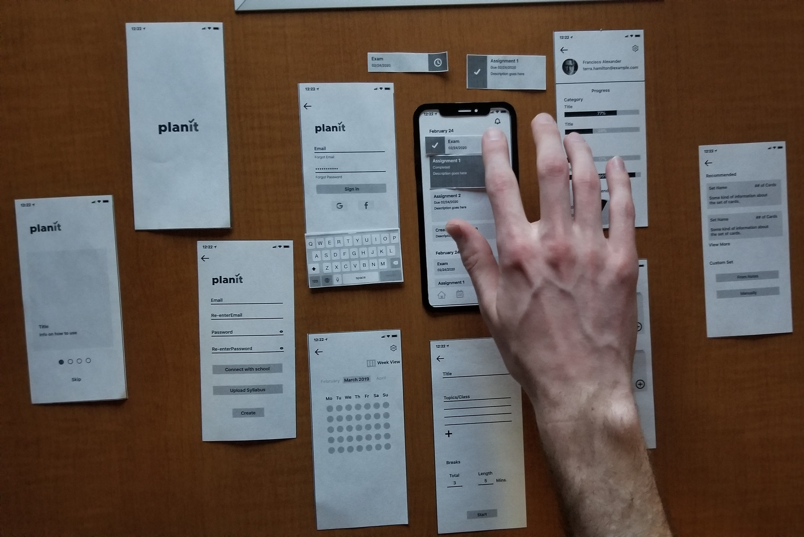

Wireframe
llustrate how the app was going to look based on our persona. This app had to cater to the persona's needs and wants. Our group came up with this wireframe and following this we jumped into mapping the key path scenario. Once Jordan sketched out some screens we, went onto Figma and made a low-fidelity paper prototype. Using this paper prototype I gathered some users to do user testing. Before we went into paper prototyping, my group and I had to go through the screens to see what the key path scenario was going to be. The keypath scenario is how the user will most often navigate through PlanIt. Our group had to make sure that we had the most talked-about features integrated into the key path. After the key path scenario, using our persona we had to tend to needs that were not in the key path scenario which then these features become our validation scenario.

When paper testing users clicked on features and we would lay another piece of paper on top of the other screen to simulate what would happen when an action happens.
High Fidelity
llustrate how the app was going to look based on our persona. This app had to cater to the persona's needs and wants. Our group came up with this wireframe and following this we jumped into mapping the key path scenario. Once Jordan sketched out some screens we, went onto Figma and made a low-fidelity paper prototype. Using this paper prototype I gathered some users to do user testing. Before we went into paper prototyping, my group and I had to go through the screens to see what the key path scenario was going to be. The keypath scenario is how the user will most often navigate through PlanIt. Our group had to make sure that we had the most talked-about features integrated into the key path. After the key path scenario, using our persona we had to tend to needs that were not in the key path scenario which then these features become our validation scenario.
After each test, each group member wrote up their notes in a more uniform way. Once we did that we went through them and found key ideas that the user being test said. Doing it this way allowed us to compare what we saw and how the user reacted when asked questions. I focused more on the body language of the user being tested, this way I could record if the user was confused but didn't want to say. I feel that when users are being tested, they sometimes will give answers that sometimes are artificial because they are not comfortable with asking for help.
We gather great data that helped us improve our high fidelity prototype, this includes the size of our button, placement of some features, and allowing users to have forgiveness. Allowing the user to have forgiveness is when a user clicks the wrong area to find a feature, but it is there so if they do accidentally click it they will not become confused. An example in PlanIt was the "create study session" feature which is in multiple places around the app. This way users will always be able to create a study session. The placement of some features were in confusing areas, for example, we had a notification button on the home screen. This feature was to manage notifications which we ended up putting in the settings on the profile page. Lastly, when testing users had a hard time clicking the buttons because they were small due to Figma's prototyping function. The group and I had to go back and add a transparent box so the button its self was a clickable size.